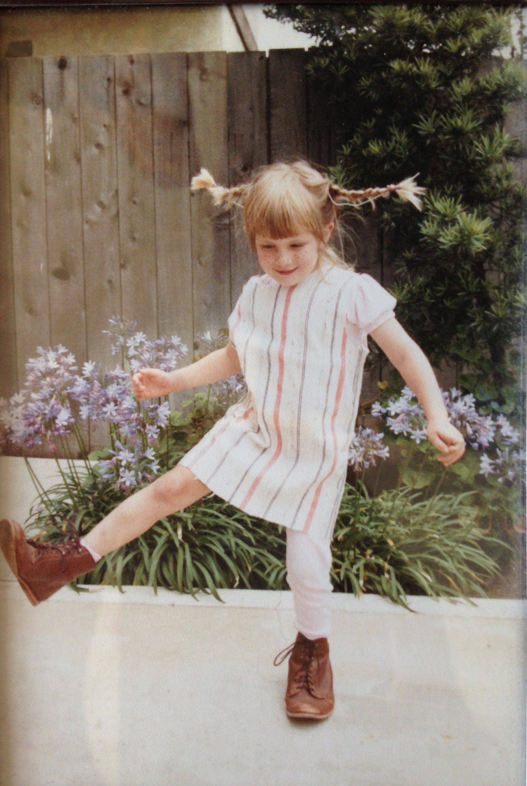
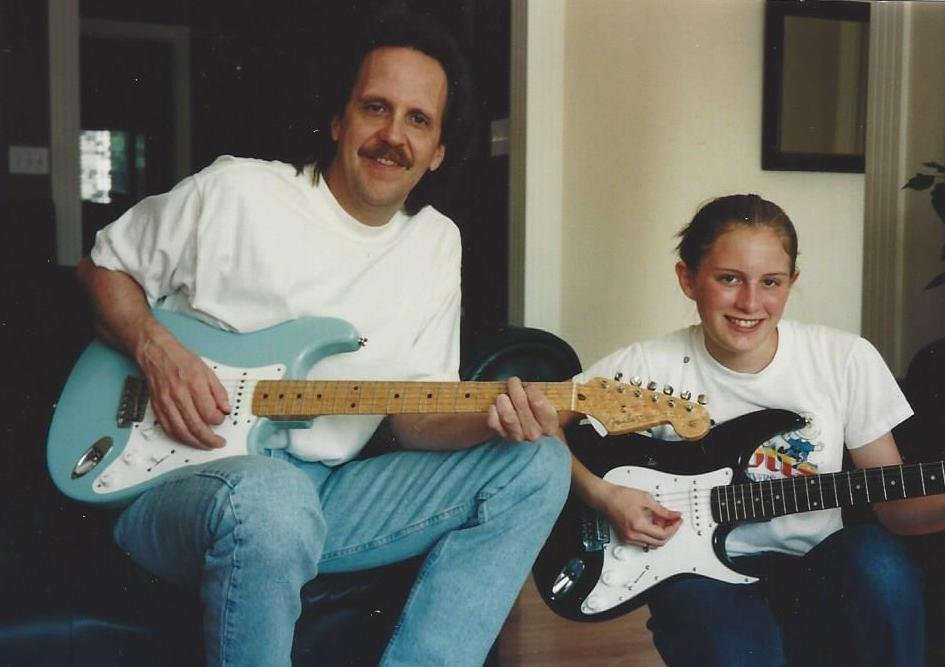
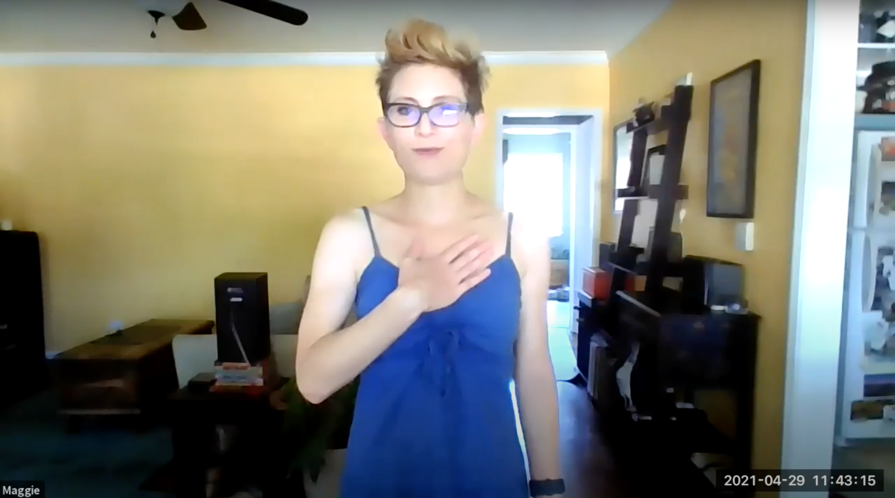
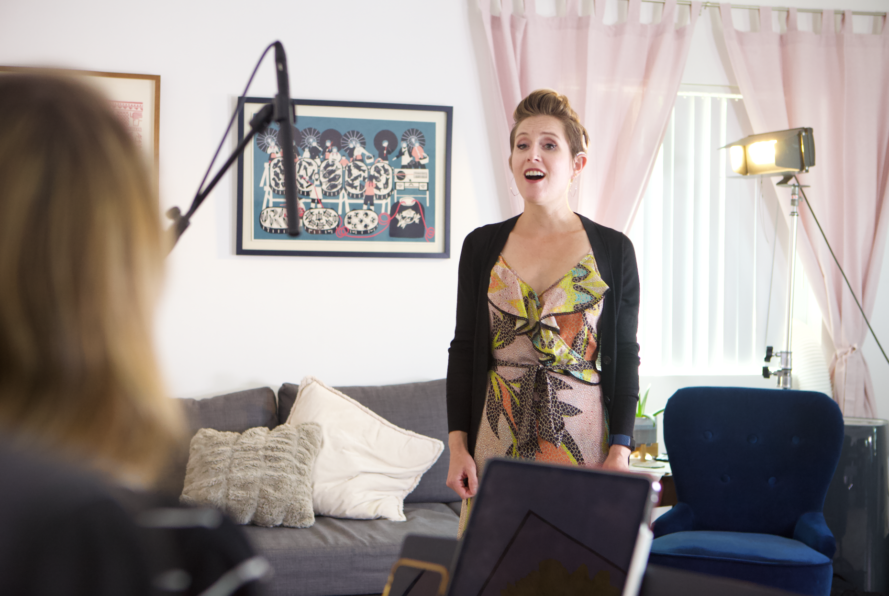
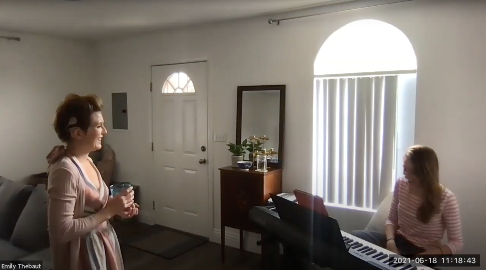

“The project reawakened [the musical] passion in me and has given back my voice. I feel more like myself than I have for a long time”
“By prioritizing expression, understanding of emotions, and thinking creatively on the spot — I was really able to help Maggie realize the power of her voice.”
Maggie Whittemore
Here, My Voice Participant | Multimedia Designer
I fell in love with music at an early age and dove into community theater, choir, and piano lessons at age 5. Music was a daily staple in our home, with dinners often accompanied by classical music or the soundtrack from a musical, a practice that allowed me to impress my choir director with my recognition of her spontaneous performance of Vivaldi.
I was diagnosed with progressive hearing loss in my teens and got my first hearing aid in the middle of high school. I began with the smallest in the ear hearing aid, and proceeded to do worse on every listening comprehension test in French class than the one before. The cause of my hearing loss remains a mystery.

Emily Thebaut
Here, My Voice Teacher | PhD Student, Vocal Arts of USC Thornton School of Music
Emily is a singer and voice teacher based in Los Angeles. She is currently finishing her doctoral degree in Vocal Arts at the University of Southern California's Thornton School of Music, where she has been a teaching assistant and President of the student chapter of the National Association of Teacher’s of Singing (SNATS).
Recently, Emily has produced immersive virtual opera productions including Pepito, by Nicolas Lell Benavides, an animated opera short, as well as a virtual production of Argento’s “Mrs. Manners on Music,” and Lee Hoiby’s Bon Appetit. Emily completed her Master of Music degree from the San Francisco Conservatory of Music and her undergraduate degree from Oberlin Conservatory. Emily has also studied with the American Institute of Musical Studies in Graz, Austria, Oberlin in Italy and Opera Festival du Roma.
Maggie’s Experience
Participating in the Here, My Voice project has proven to be a surprising and wonderful opportunity. I began my voice lessons full of nerves and a bit of reluctance, quite certain that whatever sounds I produced I would find lacking. Instead, I was welcomed into a safe space and invited to explore making noise and seeing what our bodies can do, and found myself surrendering to trusting the process.
As the weeks went by I raised my voice more easily and my confidence grew. At one point Emily exclaimed that I’d sung beautifully, and I am still riding that wave of triumph. I discovered that I was always in a great mood after a lesson or good practice session. As my focus shifted away from my own hesitations and limitations I became more free to lose myself in the music. I found myself able to enjoy reconnecting with the creative process of expressing emotion through the exercises and music we worked on.
The lessons have given me the opportunity to recondition not only my voice but also my relationship to it, and to restore a creative outlet that had long been out of commission. Our work throughout this project has been so good for my soul, and I hope to continue to cultivate the energy we have created and move forward with a song in my heart once more.


Emily’s Experience
Just like Maggie, my self-confidence as a teacher improved as well. I was nervous at the beginning of this experience. I didn’t know what to expect, I didn’t want to say the wrong thing, and I honestly didn’t understand how to just focus on expression as opposed to intonation and technique. I was really able to change my mindset and honestly, teaching philosophy, by prioritizing expression and understanding of emotions, and thinking creatively, on the spot, as to how to help Maggie realize the power of her voice.
Maggie and I became very close through the process. We are both very similar, sensitive souls, with big hearts who can be a bit shy! We both really understood each other, and I think, had a great mutual respect for one another. I know Maggie made me feel a lot more comfortable during the process. I was so appreciative of her openness and willingness to try new things and ideas, which weren’t always successsful. I think we both opened up a lot with one another during the process.
This was a truly amazing experience. I learned so much along the way, both in working with my participant and also in understanding the true mission of this project. Initially, I’ll be honest, I was confused as to what the goals were. It was confusing to me that we would have something like a pre-warm-up assessment, where we are clearly just judging vocal technique when the goal of the program was to work on expression. I had a hard time wrapping my head around what exactly I should be focusing on. I think I was really able to immerse myself in the experience and greatly benefit from it.

